A visual system for the Initiatives tab
The tab as tokens with values, applied to a real capture at 480, 768, 1024 and 1440: what the look should become, what the current one already gets right and must survive, the three smallest changes that buy the most, and the wave lane carried as a first class surface.
Independent second opinion: round A's report was not read and its pull request was not opened.
In one page the six sentences this report exists to land
- The tab is not undesigned. It passes its own 16 check redesign gate 16/16, its worst sampled contrast is 6.7:1, its text shares one left edge within 16px, and its focus ring survives the four second repaint. The keep list is long and this report starts there.
- What dates it is not spacing, it is rank. Twenty one chips, mono, 10.5 to 11px, in the same pill for a count of projects, a gate that says "met", a wave's state and a member's state. The card has no display step and no surface step: the title, the rows and the wave rows are the same weight of line and nearly the same fill.
- The system is small and numeric: 5 surfaces, 2 lines, 3 inks, 6 state roles, 5 type steps, 6 spacing steps, 5 radii, 3 fixed heights, 2 elevations, 1 focus ring. Every pair is AA except one at 4.51:1, named below.
- Applied to the same live DOM at 1440, 1024, 768 and the 480 rail, it buys hierarchy and air, and it costs height: the card +52px at 1440 and +41px in the rail, the wave lane +15% at 1440 and +41% in the rail. Density becomes a setting, not a constant.
- The wave lane is the most organised surface in the product and the least designed:
.wave-lanehas zero CSS rules today. The system gives it a 2px state spine, lane blocks that sit side by side (645px each at 1440, 457px at 1024) and stack below 900px of pane, gate pills with one dot, and member pills, with no markup change and no wave fact dropped. - Three smallest changes, ranked: the card's type scale and metadata sentence (CSS, about 28 declarations); the wave spine and lane set (CSS, about 34); sentence case section heads with a hairline (CSS, 7). The tab gate encodes the old type and must be updated with the first, not deleted; three wave chips are below AA today.
1What the current tab gets right, and must survive
The reader kept this structure on purpose. A restyle is only allowed to earn its keep by preserving every fact and every behaviour below; the failure mode this section exists to prevent is a prettier card that has quietly dropped the sentence behind a gate.
The tab already passes a written rubric
The repository's own gate, tools/verify-initiatives-redesign.mjs, scores the tab against 16 claims and against a recorded baseline of the 1.142.2 tab. Run on this base, in a scratch fixture home: 16 of 16, against 4 of 16 for the recorded baseline. The tab is the result of that work, so the system below competes with a solved floor, not with a blank page.
| Check | What the tab answers |
|---|---|
| type-title | 13.5px, weight 600 |
| type-body | 12px / 18.6px |
| type-fold | 12px fold, 12px tree, 12px assistant |
| type-meta | 11px hint, 10.5px chip |
| contrast-aa | worst 6.7:1 at .init-desc |
| spacing-4 | 3 distinct values, all multiples of 4 |
| hit-targets | 9 controls, smallest 28px |
| chips-fit | 21 chips, widest 168.1px, none clipped |
| Check | What the tab answers |
|---|---|
| alignment | left edges 982, 982, 982, 982, 982, 998 (spread 16px) |
| line-length | 72 ch at 466px |
| empty-state | heading h5, 213 chars, primary action |
| focus-ring | 2px, 8.3:1 |
| hover | fold, mini button and tree link each change a colour or decoration |
| active | pressed transform and background |
| keyboard | fold reached in 5 Tabs, Enter flipped aria-expanded |
| focus-persist | 4.6s after Tab, still ringed, still the same row |

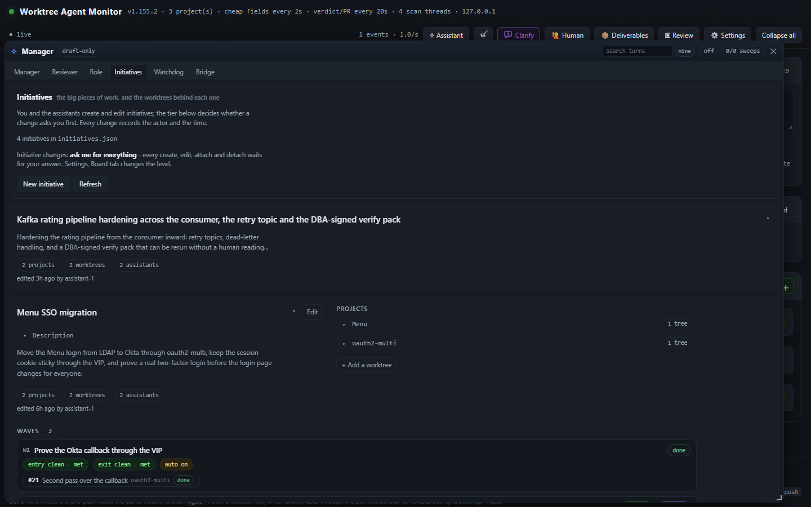
env node docs/assets/initiatives-redesign/b/capture-b.mjs. The tab as it ships, with three waves on the Menu SSO migration.Eight things that must survive the restyle
- The map, in this order: initiative, then projects, then worktrees on their branches, then the assistant and history folds, then waves across the width of the card. The tree names are links and the branch is a chip beside them (
public/assistant.js:3785). Nothing in a token pass may move a fact to a second screen. - The measured description cut. The two line preview is measured from the rendered line box and cut on a word boundary; the dots appear only when something was cut (
public/assistant.js:3762,public/core/initiative-fold.js). A CSS-webkit-line-clampwould cut mid-word and lose the property the tab's own test calls "never mid-word" (tools/verify-initiatives-tab.mjs:431). - Focus that outlives the repaint. The pane rebuilds from a read every four seconds (
INIT_READ_GAP_MS,public/assistant.js:3418) and restores the ring to the row that had it. The gate proves it at 4.6s. Any restyle that adds controls has to enterrestoreInitFocusor a keyboard reader loses their place four times a minute. - One reading edge and a 72ch measure. The card's prose, chips and folds share one left edge; the description is capped at 72ch and does not run the width of a 1382px pane (
public/style.css:4853). - The tier sentence. "Initiative changes: ask me for everything" is the reader's only statement of who may change the map (
routes/initiatives.js, tier fromlib/initiative-permissions.js). It must not become a tooltip. - The provenance line, "edited 6h ago by assistant-1", on the same row as the counts. It is the only answer to "who touched this last".
- The wave lane's honesty. No state is invented, every chip carries the sentence behind its answer in
title, an unreadable store is said rather than drawn as "no waves", a template id the bundle no longer holds is drawn as unresolved, and skipped waves are listed. That vocabulary (public/core/waves-lane.js) is the best thing in the tab; smoothing it away would be the restyle's worst outcome. - The dark green theme. The accent is the panel's green, the links are the panel's blue, and the tab reads as part of the panel, not as a product page inside it. The system below changes the values of the washes, never the family.
2The visual system, as tokens with values
The whole system is one file, docs/assets/initiatives-redesign/b/tokens.css. It is not imported by the product: the capture harness injects it into the live DOM after the page is up, so every pixel below is the product's own markup, with the panel's own variables remapped inside #as-initiatives and no JS touched.
Two rules decide the values. First, a token is a job before it is a number: five surfaces because there are five depths (page, card, row, raised, well), two lines because there is one hairline and one emphasis, three inks because there are three reading weights. Second, nothing is invented where the panel already has a role: the accent, link, warn, bad and idle families come from public/style.css:1-40, and the tab remaps them rather than adding a second palette beside them.
2.1 Surfaces, lines and elevation
| Token | Value | What it is for | Where it lands |
|---|---|---|---|
--tab-ground | #0f1115 | the pane behind everything; the panel's own --bg | #as-initiatives |
--tab-surface | #141922 | the card: one step off the ground, never a second dark | .init-card, .init-empty |
--tab-row | #171d27 | a row inside the card; the wave row's own fill | .init-card remap of --card, .wave-row |
--tab-raised | #1c2330 | hover, and the current wave; the only "lifted" fill | .init-proj:hover, .wave-row[data-wave-current=true] |
--tab-sunken | #10151c | wells: inputs, the position marker, lane blocks, the tier box | .init-form, .wave-pos, .wave-lane |
--tab-line | #232a36 | the one hairline: card edge, row edge, lane edge | all borders |
--tab-line-strong | #35404f | emphasis: the current wave's edge, a lane's left bar, a section rule that must be seen | .wave-row[data-wave-current], .wave-lane |
--tab-e1 | inset 0 1px 0 rgba(255,255,255,.03), 0 1px 2px rgba(0,0,0,.35) | on a dark ground elevation is a top hairline plus one soft shadow, not a glow | .init-card, current wave |
--tab-e2 | 0 8px 24px rgba(0,0,0,.28) | reserved for a floating layer; not used on the tab today | none in the capture |
2.2 Ink, with the contrast ratio measured
| Token | Value | Ratio on --tab-surface | Job |
|---|---|---|---|
--tab-ink | #e9edf4 | 15.0:1 | titles, names, the one thing on a row that must be read first |
--tab-ink-2 | #aeb8c6 | 8.8:1 | description, tree names, member titles: body copy |
--tab-ink-3 | #7f8a9a | 5.0:1 | counts, hints, the provenance line, positions: a full step below body, still AA |
--tab-link | #79b8ff | 8.5:1 | tree links; the panel's blue, one step lighter |
--tab-accent | #3fb950 | 6.0:1 | the green thread: done, the spine of a finished wave, the kicker on this page |
The tightest pair in the system is --tab-ink-3 on --tab-raised at 4.51:1, used only for the 10px project tag inside a member pill. It passes AA and is the floor, not a habit: if a later round puts any more words on that fill, it should use --tab-ink-2 (8.4:1 on the same fill).
2.3 State roles: a foreground, a wash and a line each
Every state in the tab is drawn three ways in the same colour family: a pill's text, its wash, and (on a wave row) a 2px spine. That is what makes a running wave read from across the room without reading the word. The foreground on its own wash is given, because a wash changes the ground under the text.
| Role | Foreground | Wash / line | On wash | Where |
|---|---|---|---|---|
| ready | #9ecbff | rgba(56,139,253,.12) / .38 | 8.6:1 | a wave whose entry gate is met and whose exit is open |
| running | #56d364 | rgba(46,160,67,.14) / .42 | 7.3:1 | a wave with a running member; its spine is this green |
| done | #3fb950 | accent, no wash | 6.0:1 | exit gate met; the spine closes the wave |
| warn | #e3b341 | rgba(210,153,34,.12) / .40 | 7.2:1 | cannot tell, blocked, auto on, auto waiting |
| bad | #ff7b72 | rgba(229,83,75,.12) / .40 | 5.9:1 | abandoned, an unresolved template, a refused lane set |
| idle | #8b95a5 | rgba(139,149,165,.10) / .32 | 5.6:1 | not entered, no gate, no members, auto off |
2.4 Type: five steps, two of them the same size on purpose
Chromium reports a computed font size in whole pixels, so a declared half step reads as the next integer; the table gives both, and the line box follows the declared value. The scale is not a ratio, it is a set of jobs: a display step for the one title, a title step for a wave, a body step for prose and names, a meta step for counts and hints, a chip step for the shortest answer the tab can give.
| Token | Declared | Measured | Weight / line | Job |
|---|---|---|---|---|
--tab-fs-display | 15.5px | 16px | 600 / 1.25, -0.01em | the initiative title, opened or folded; the tab's one display line |
--tab-fs-title | 13px | 13px | 600 / 1.25 | a wave title, a project name |
--tab-fs-body | 12.5px | 13px | 400 / 1.6 | description, tree names, member titles |
--tab-fs-meta | 11.5px | 12px | 400 / 1.5 | counts, hints, provenance, branch chips |
--tab-fs-chip | 10.5px | 11px | 500 to 600 / 1.4 | the shortest answer: a state, a gate, an auto switch |
--tab-font-ui | var(--ui) | Segoe UI | every word; the tab stops borrowing the terminal's face for its words | |
--tab-font-mono | var(--mono) | Cascadia Mono | ids, branches, positions: strings a reader compares character by character |
public/style.css:1122), so the word "met" is drawn in the face reserved for branch names. The system keeps mono for W2, #13, wtgui/... and oauth2-multi, and gives words the UI face. That single change is most of the difference between "terminal readout" and "designed panel".2.5 Space, radius, density and the focus ring
| Token | Value | Job |
|---|---|---|
--tab-s1 | 4px | inside a chip, the caret's gap |
--tab-s2 | 8px | between related rows, pill gaps |
--tab-s3 | 12px | inside a wave row, a form's padding |
--tab-s4 | 16px | the card's padding, one indent step |
--tab-s5 | 24px | the gap between the card's two columns |
--tab-s6 | 32px | the empty state's air |
| Token | Value | Job |
|---|---|---|
--tab-r1 | 4px | position marker, branch chip, small wells |
--tab-r2 | 8px | controls, member pills, lane blocks |
--tab-r3 | 12px | a wave row, a form, a figure |
--tab-r4 | 16px | the card; the one large radius in the tab |
--tab-r-pill | 999px | a state, a gate: a pill, never a rectangle |
--tab-row | 32px | a fold row, an input: the height a finger and a mouse both hit |
--tab-control | 30px | a mini button |
--tab-chip | 20px | a state, a gate, an auto word |
--tab-ring | 2px solid #79b8ff, offset 2 | one ring on every control, in the link's blue |
2.6 How it is applied without touching the markup
Two moves, in this order. First remap the panel's variables inside the tab, so every rule that already exists inherits the new ink and surfaces:
/* 2. the panel's own variables, remapped inside this tab only */
#as-initiatives {
--surface: var(--tab-surface); --card: var(--tab-row);
--panel: var(--tab-ground); --line: var(--tab-line);
--text: var(--tab-ink); --dim: var(--tab-ink-2);
--dimmer: var(--tab-ink-3); --hover: var(--tab-raised);
--blue: var(--tab-link);
}
Then touch geometry and rank only where the current tab is weakest: the card, the metadata row, the section heads, the wave spine and the lane groups. Three representative rules, quoted from the file:
/* the metadata row becomes a sentence, not a wall of capsules */ #as-initiatives .init-chips .chip { height: auto; padding: 0; border: 0; background: transparent; color: var(--tab-ink-3); font-family: var(--tab-font-ui); font-size: var(--tab-fs-meta); font-variant-numeric: tabular-nums; } #as-initiatives .init-chips .chip + .chip::before { content: "\00b7"; margin: 0 7px; color: var(--tab-ink-3); } /* a wave row carries its state on its leading edge, from the server's own attribute */ .wave-row::before { content: ""; position: absolute; left: 0; top: 0; bottom: 0; width: 2px; background: var(--tab-idle); } .wave-row[data-wave-state="running"]::before { background: var(--tab-run); } .wave-row[data-wave-state="done"]::before { background: var(--tab-accent); } .wave-row[data-wave-state="unknown"]::before, .wave-row[data-wave-state="blocked"]::before { background: var(--tab-warn); } /* the lane set takes the row, then two lanes sit side by side above 900px of pane */ .wave-members > .wave-lanes { flex: 1 0 100%; width: 100%; } @container (min-width: 900px) { .wave-lanes { grid-template-columns: repeat(auto-fit, minmax(340px, 1fr)); } }
Every selector is prefixed with #as-initiatives in the file, so the layer cannot leak into the rest of the panel; the snippets above drop the prefix for width.
2.7 What the system deliberately does not do
- No motion. The pane is rebuilt from a read every four seconds; a transition on a wave row would restart on every repaint and read as a flicker. The tab is static, and hover is a fill change, not an animation.
- No new markup and no new classes. Every hook the layer uses is emitted today:
data-wave-state,data-wave-current,data-gate-state,data-lane-read,data-init-card,is-titlecard(public/core/waves-lane.js:144-163). - No switch affordance on the auto chip. There is no write route behind it (
routes/waves.js:1-26), so it stays a status word: "auto on" and "auto off", not a toggle a reader will click and find dead. - No second palette. The accent, link and state families are the panel's; the layer changes their washes and their type, not their hue.
3The same DOM, before and after
Each pair below is the same page, the same fixture and the same open card; the only difference is that tokens.css was injected before the second frame. Nothing was re-rendered, re-seeded or re-worded between the two, which is why the pairs can be read as a look diff.
3.1 At 1440, floating at 1382px of pane

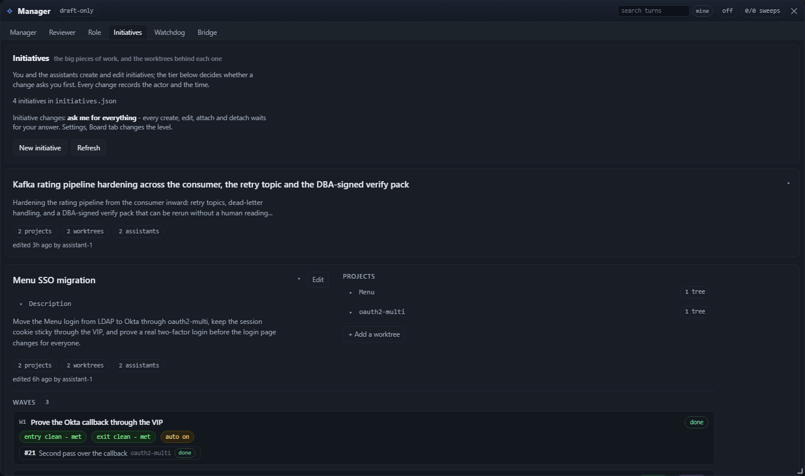

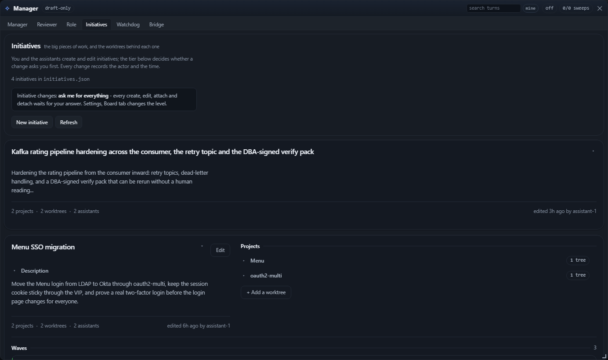
3.2 In the reader's default rail: the 480px dock
The dock is the state most reads happen in, so it is the pair that matters most. The system holds at 480: the title wraps to two lines, the metadata sentence wraps to one line under it, and the wave rows keep their pills without clipping. The cost is height, and it is named in 3.4.

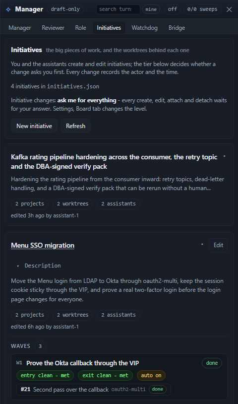

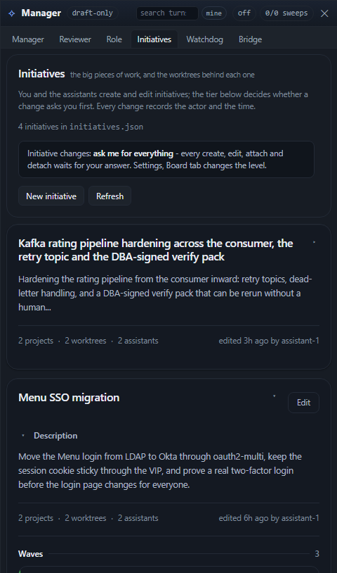

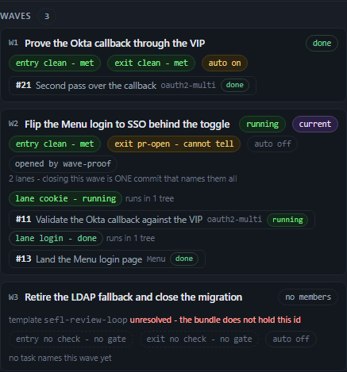

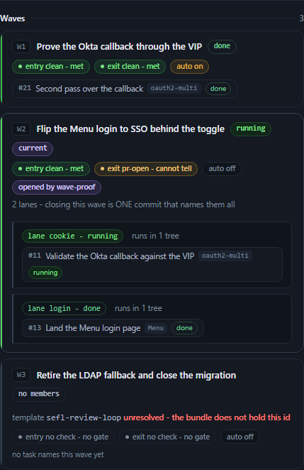
3.3 At 1024 and 768

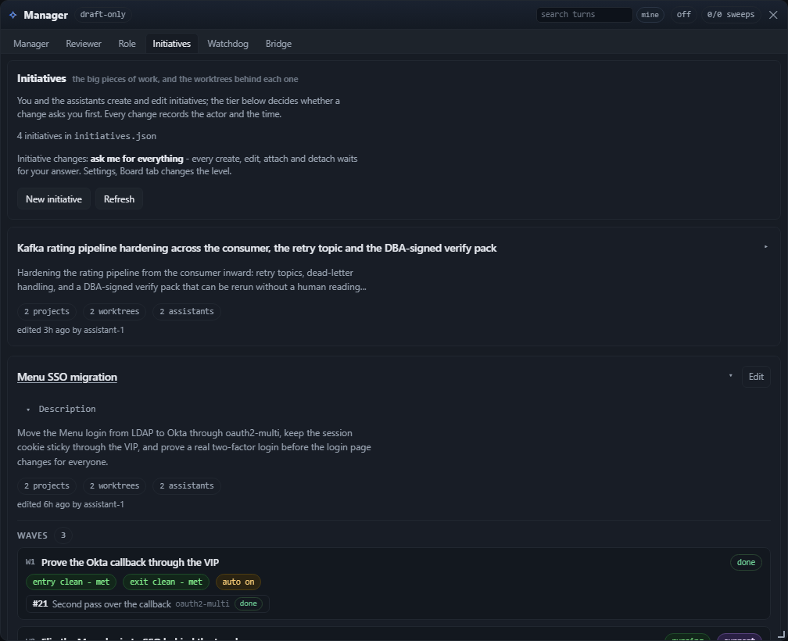

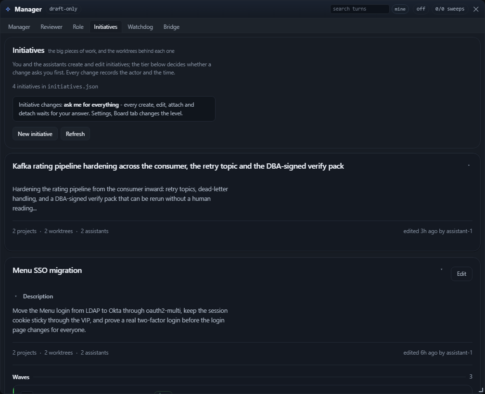

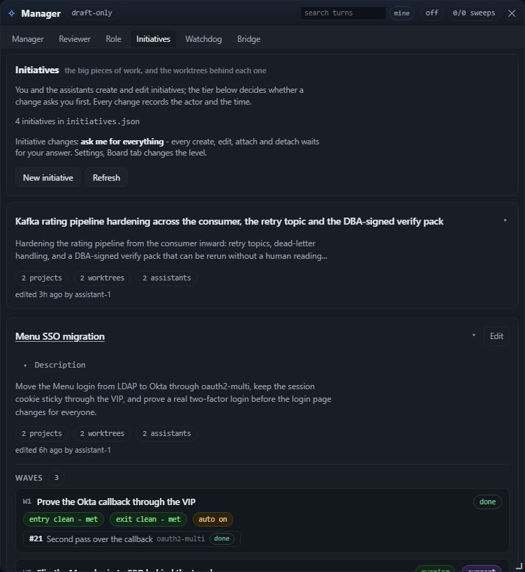

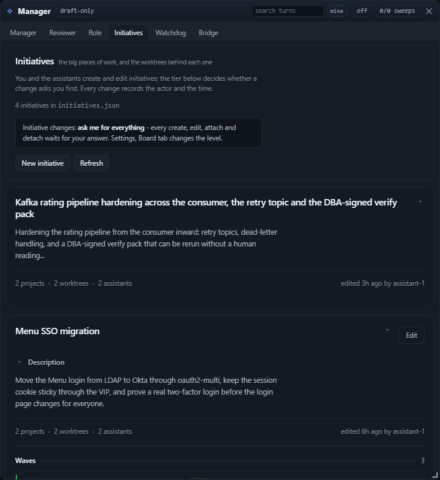

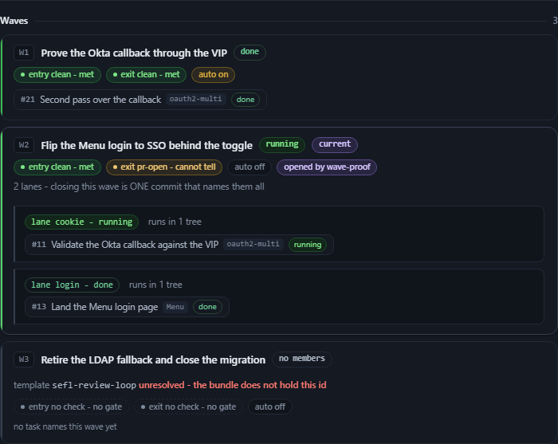
3.4 The delta, in numbers rather than adjectives
| Measured element | Ships | Tokens | Why it is the change |
|---|---|---|---|
| Card radius / padding | 8px / 12px | 16px / 16px | one large radius and one pad step; the card reads as a card, not a bordered group |
| Initiative title | 15px (14 at 1024/768) | 16px | one display step that survives the container query instead of shrinking with the pane |
| Description | 12px / 19px | 13px / 20px | body copy at a reading size; the fold re-measures, so the cut stays on a word |
| Count chip | 11px mono, pill, 22px high, 76px wide | 12px UI, no border, 17px high, 50px wide | counts become a sentence with 7px dots; the capsule wall goes |
| Section head | 11px, uppercase, .06em, dim | 12px, sentence, 600, ink + hairline | five labels per card stop reading as form labels |
| Wave row | 8px radius, 8/10 pad, 94px high | 12px radius, 12/16 pad, 108px high, 2px spine | a state you can see before you read the word |
| Gate pill | 11px mono, 21px high | 11px UI, 20px high, 5px dot | the answer's colour is a dot, and the check's name is a word |
| Lane block | no CSS rule: 386 x 50, shrink-wrapped | 645 x 70 each, side by side; 457 at 1024; stacked at 768/480 | the lane set is the wave's strongest fact and had no form |
| Card height (init_sso) | 153px at 1440, 166px at 480 | 205px at 1440, 207px at 480 | +52px and +41px: the price of the air |
| Wave fold height | 417px at 1440, 468px at 480 | 478px at 1440, 661px at 480 | +15% wide, +41% in the rail; see the density note |
--tab-row 32, --tab-control 30, --tab-chip 20) and the spacing scale are already the only knobs needed: a data-density="compact" override that sets s3 to 8, s4 to 12, the row to 28 and the member pill to 22 would return most of that without touching a colour. It should ship as a reader choice in the same change, not as a later fix.4The wave lane, as a first class surface
Waves are the strongest organised idea in the initiative: a named position, a gate that only opens on a live read, a switch that can open the next wave, lanes that run in parallel and close in one commit. The lane already carries all of it in the payload (routes/initiatives.js:179), and the tab draws it (public/assistant.js:3873). What it does not have is a form: .wave-lane, .wave-lanes, .wave-join, .wave-auto-open and .wave-lane-read have zero CSS rules in public/style.css.
4.1 What the lane draws, field by field
| Props | Attribute or class | What it means, and where it comes from |
|---|---|---|
W1 marker | .wave-pos | the wave's position in the initiative's order; lib/waves.js refuses duplicate positions |
| title | .wave-title | up to 120 characters, authored in the wave; never inferred |
| state | .wave-state.is-*, data-wave-state | one of empty, unentered, unknown, ready, running, blocked, done, abandoned; folded from members and gates, never stored |
| current | .wave-current, data-wave-current | the lowest position the stated order makes current: running, then ready, then not entered |
| entry / exit gate | [data-wave-gate], data-gate-state | a check from the 14 name vocabulary, and the live answer: met, unmet, unknown, none, abandoned. "Cannot tell" blocks |
| auto | .wave-auto.is-on/.is-off | whether this wave may open the next one, and only on a read |
| auto open | [data-wave-auto-open] / [data-wave-auto-wait] | whether the wave before opened this one, naming it, or why it is still waiting |
| join | .wave-join, data-wave-join | with two or more lanes: closing is one commit that names them all |
| lanes | .wave-lane, data-lane-read | the lane's state, the trees it runs in, and whether it can be pinned: ok or cannot-tell |
| members | .wave-member, data-member-state | task id, title, project and the task's own state; membership is the task's waveId |
| template | .wave-template, data-template-resolved | the bundle id the members inherit, or an honest "unresolved" |
| skipped / store | .wave-skipped, .wave-store-bad | why a wave was skipped, and an unreadable store said as itself |
4.2 The capture that proves the lane carries waves, lanes and members
The fixture ships no waves, so this round seeds waves.json with the shape lib/waves.js reads and gives two tasks a waveId and a lane. The result on the route, asserted by the capture script before a single screenshot is taken:
- three waves on
init_sso: W1 done (both gates met), W2 running (entry met, exitpr-opencannot tell), W3 empty (no gates, templatesefl-review-loopunresolved); - W2 is current and was opened by W1's switch:
autoOpen.open === true,from === "wave-proof"; - two named lanes,
cookieandlogin, in two different worktrees, so the set closes in one commit; each lane readsokand names its tree; - two members:
#11running incookieonmenu-sso-state-cookie,#13done inloginonmenu-login-page.

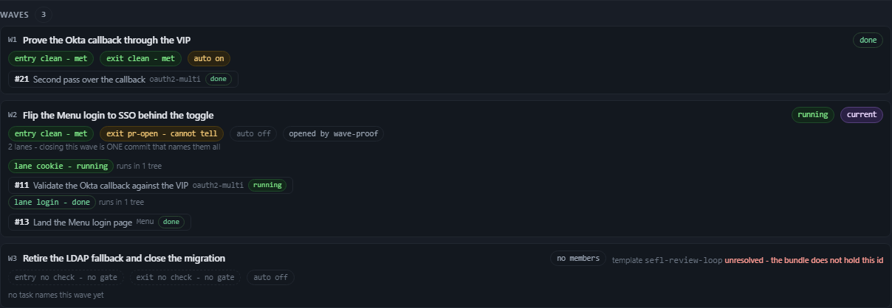

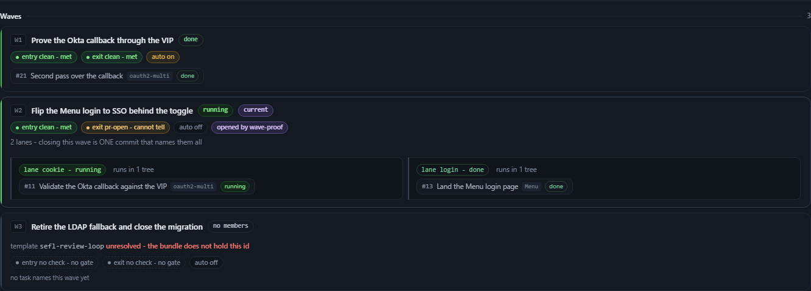
4.3 Four findings about the lane that are not cosmetic
- The lane set is nested inside the members flex box.
waveHtmlwraps lanes and members in the same.wave-members(public/core/waves-lane.js:163), and.wave-membersis a wrapping flex row (public/style.css:4960). A lane set is therefore a flex item and shrinks to its content: at 1440 it measured 386px, and two lanes could only stack. The fix in the layer is one rule,.wave-members > .wave-lanes { flex: 1 0 100% }, and it is the difference between a lane lane and a lane list. It is worth fixing in the markup in the implementation round: the lanes are not members and should not be their children. - The join sentence contradicts a refusal.
laneHtmldraws "2 lanes - closing this wave is ONE commit" wheneverlaneJoinOwedis true (public/core/waves-lane.js:138), even whenlaneRefusedhas already drawn "The lanes cannot be isolated, so this wave cannot close" (:101-104). A reader sees both sentences at once. The condition should belaneJoinOwed && !laneRefused: one line, JS, and it is a truth fix rather than a look fix. - Three wave texts are below AA.
.wave-gate.is-noneand.wave-auto.is-offuse--dimmer#6b7482on the wave row (public/style.css:4955,:4959), and.wave-member-projectuses the same ink at 10.5px (:4964). The measured ratio is 3.84:1. The tab's gate reports 6.7:1 worst because its contrast sample stops at.init-descand never enters the lane (tools/initiatives-measure.mjs:441-446). The fix is--dim(7.19:1) or the system'sink-3(5.04:1 on the surface). - The lane is read only, and must look it.
routes/waves.js:1-26states the slice deliberately has no write route, no evaluator, no scheduler and no auto start; the auto switch is evaluated by a read. Styling a gate pill or the auto chip as a control would promise an action the product does not have. The system keeps them as pills and words, and says so here so the implementation round does not "discover" it by wiring a click that posts nowhere.
4.4 What the system gives waves, in rules
- A spine, not a badge. The wave's state is a 2px leading edge colour, from
data-wave-state, plus a pill. Two independent reads of the same fact: the row reads at a glance, the pill reads at a word. - The state beside the name. The title no longer stretches to push its chip 900px away; the chip follows the title, and the template takes the next line. On a 1207px row the state is now 8px from the name.
- Gates as answers. A 5px dot in the answer's colour, the check's name, and the answer in words.
no checkkeeps its dashed border, so "nothing to check" cannot be mistaken for "not met". - Lanes as parallel blocks. Two lanes at 1440 and 1024, stacked at 768 and 480; each names its own read ("runs in 1 tree") and holds its own members. A refused lane set keeps the red alert and its sentence.
- Members as pills with the id in mono. The id is the string a reader types into a queue; the title is prose; the project is a tag; the state is a pill. Four ranks, four treatments.
- Nothing dropped. The diff adds no markup and removes no node: skipped waves, store errors, unresolved templates and the auto-wait sentence all keep their place.
5The three smallest changes that buy the most, ranked
Each is CSS only, each can ship alone, and each is ranked by perceived modernity per file touched. The measured deltas are from the captures in section 3; the gate impacts are from the source of the two tab gates, not from a run of them (see 7.4).
The card's type scale, surface, and the metadata sentence
Buy: a display step, a body step and a card that sits above the page. It is the change every card wears, folded or open, in every state.
- What
- Title 15.5/600/-0.01em; description 12.5/1.6; counts as 11.5px UI text with 7px dots and no border; card 16px padding, 16px radius, one soft elevation; 16px between blocks. Section heads are not in this change (rank 3).
- Files
public/style.cssonly:.init-card(:4834),.init-title(:4851),.init-desc(:4853),.init-chipsand its chips (:4862-4864), the wide card rule (:4979). About 28 declarations, no JS.- Measured
- Card 153 to 205px at 1440; title 15 to 16px; description 12/19 to 13/20; count chip 22px pill to 17px text.
- Risk
- medium
tools/verify-initiatives-tab.mjs:431asserts the title card preview is exactly11.5pxand:524asserts.init-treerows are11.5px. A type change turns those red until the expected values are updated in the same commit. Update them; do not delete them. - Gate
- chips-fit still passes (the
.init-chips .chipspans stay); type-meta reads the new 11.5px; contrast improves (counts from 6.9:1 to 5.0:1 at worst, still AA).
The wave spine and the lane set
Buy: the newest, most structured surface stops looking like a footnote. This is the change a reader sees first as "modern", because it is the only place where the product shows parallel work.
- What
- 2px state spine from
data-wave-state; current wave raised; 12px radius and 12/16 padding; the state pill packed beside the title; gate pills with a dot; member pills at 8px; the lane set given the row and two columns above 900px of pane; the lane's own read and members inside it. - Files
public/style.cssonly:.wave-row(:4937),.wave-pos(:4939),.wave-title(:4942),.wave-gatesand gate tones (:4953-4957),.wave-membersand.wave-member(:4960-4964), plus new rules for.wave-lanesand.wave-lane, which have none. About 34 declarations, no JS.- Measured
- Wave row 94 to 108px; lane 386x50 shrink-wrapped to 645x70 side by side at 1440, 457x70 at 1024, stacked at 768 and 480.
- Risk
- low
tools/verify-waves-lane.mjsmakes no font or size claims; it asserts the data attributes and clips at 1440/900. The one trap is the nesting in 4.3: withoutflex: 1 0 100%the lanes silently stay stacked, which is exactly what the first capture showed. - Gate
- No existing check covers the lane's typography or its lane layout, so this change is invisible to both gates. That is a hole, not a safety: add a lane check (see 6.1).
Sentence case section heads, with a hairline
Buy: five labels per card stop reading as form captions. It is seven declarations, it repeats five times per card, and it is the highest repetition per line of CSS in the tab.
- What
- Section heads at 12px/600 in sentence case, ink, with a 1px rule that flexes to meet the count; the count becomes a plain numeral in tabular figures; the wavefold's own override follows (
.init-wavefold .init-sechead .chip, :4930). - Files
public/style.cssonly:.init-sechead(:4866), the wavefold head count (:4930), and one new::afterrule. 7 declarations, no JS.- Measured
- 11px uppercase at .06em to 12px sentence at 600; the head grows 21 to 17px of line box because the uppercase tracking goes.
- Risk
- low No gate asserts the case, the size or the tracking of a section head. The only visual risk is the count landing too far right on a 1382px card; the hairline makes that distance read as a rule, not a gap.
- Gate
- None. Ship it with rank 1 if the implementation round wants one commit; it is listed separately because it is the cheapest of the three and can lead.
5.4 Three repairs to carry in whichever commit ships first
These are not ranked because they do not buy modernity; they stop the tab from lying, and they are one line each.
- The Join sentence when the lanes are refused: condition on
!laneRefused(public/core/waves-lane.js:138). - The two counts drawn as zero:
public/assistant.js:3885and:3893stampclass="chip is-zero"on the Assistants and History counts whatever the number is, so "2 assistants" wears the zero style. Drop the fixed class and let the count decide. - The three below-AA wave texts:
--dimmerto--dimon the no-gate pill, the auto-off word and the member's project tag (public/style.css:4955,:4959,:4964).
6What breaks if only the look changes
A token pass is safe against the data model: it cannot drop a wave fact, because it adds no markup. It is not safe against the tab's own tests, its contrast sample, or the four second repaint. This is the list to read before the implementation row starts.
6.1 The gates: two go red, one goes quiet
- Red: the type assertions.
tools/verify-initiatives-tab.mjs:431(preview at11.5px) and:524(.init-treeat11.5px) encode the current scale. Any rank 1 type change fails them. They are good assertions; update the expected numbers with the new scale and keep the shape of the check. - Red at the widest float: alignment. The gate's own wide run already misses
alignment(15/16) while the normal run is 16/16. A restyle that moves the chips row's left edge has to re-run the widest state, not only the default one. - Quiet: chips-fit on an empty set.
tools/initiatives-measure.mjs:459passes whenclipped.length === 0, including when there are zero chips. If rank 1 turns the counts into text and a later round removes the spans, the check reports "0 chips" and passes. Make it require the branch chip and the member pills, or it stops protecting the thing it was written for. - Blind: the contrast sample. The sample is title, description, chip, hint, fold, tree, mini, assist (
tools/initiatives-measure.mjs:441-446). It never enters the wave lane, which is how 16/16 and 3.84:1 coexist. Add.wave-gate,.wave-autoand.wave-member-projectbefore trusting a restyle's contrast number.
6.2 The JS contracts a CSS pass must not break
- The measured description cut.
paintInitDescriptionreads the rendered line height and cuts on a word (public/assistant.js:3762). It survives a type change, and it will not survive a CSS clamp. Keepwhite-space: pre-wrapand the unitless line height. - Focus through the repaint. The pane re-renders every four seconds (
INIT_READ_GAP_MS,:3418) andrestoreInitFocusputs the ring back fromINIT_FOCUS_ATTRS. A new control needs an attribute in that list, or it loses focus four times a minute. - The scroll position. The pane keeps its scroll across a repaint; an element screenshot of the wave lane scrolls it. The captures reset it in three passes before a frame shot, and so should any harness that photographs the tab.
- The container query measures the content box. A 1024 window gives a 1006px pane and, after the pane's 8px padding, a 990px content box, so the product's 1000px two-column query does not fire: 1024 is one column by design. Do not "fix" that by measuring the border box; the 480 rail depends on the same rule.
6.3 What must change anyway, look or no look
- The lane set needs markup or a rule. Lanes are children of
.wave-members(public/core/waves-lane.js:163); the system works around it withflex: 1 0 100%, but the implementation should move the lane block out of the members flex and give it its own row. - The join/refusal contradiction (4.3, one line of JS).
- The always-zero counts (
public/assistant.js:3885,:3893). - The below-AA dimmer texts (
public/style.css:4955,:4959,:4964). - The wave surface is read only. Either add the write half (route, control, confirmation) or say in the tab that the lane is a read. Styling it as actionable without the route is the one thing this system refuses to do.
- The empty lane is silent. An initiative with no waves draws no lane at all (
public/core/waves-lane.js:170-175). That is a defensible choice, but it means a reader cannot learn from the tab that waves exist; the implementation round should decide whether the empty state gets one sentence, not a control. - The brief's starting file is the wrong one. The inventory starts from
public/app.js(20,238 lines); the Initiatives tab is painted bypublic/assistant.js(7,539 lines,initCardHtmlat 3785), andpublic/app.jsis the board. A round that starts atapp.jswill inventory the wrong file.
6.4 The honest limit of a token layer
A token layer can make the tab look like it was designed this year while every fact underneath stays the same. It cannot make the lane interactive, choose a different current wave, or stop a refused lane set from contradicting itself. Those are data and JS decisions, and they are listed in 6.3 so the look change is not mistaken for the whole change.
7Method, reproduction, and what this round did not do
7.1 The two commands
# the captures: fixture home, free port, 16 PNGs, one manifest env node docs/assets/initiatives-redesign/b/capture-b.mjs # the tab's own redesign gate, on a scratch home, for section 1 env node tools/verify-initiatives-redesign.mjs --home C:/Users/roper/AppData/Local/Temp/wag/0c39a98a/gate-home --json C:/Users/roper/AppData/Local/Temp/wag/0c39a98a/gate.json
The capture script writes docs/assets/initiatives-redesign/b/captures.json: the exact command, the viewport and the fixture panel for every image, plus the route facts the images are trusted on. It builds the fixture through tools/initiatives-fixture.mjs, seeds waves.json, patches two task rows, and boots its own server.js on a free port. The reader's live panel at 7331 is never a capture target; it was read once, at the start, for the queue row, and never written.
7.2 Every image, its viewport and its frame
| File | Viewport | Pane | What it shows |
|---|---|---|---|
00-1440-page-docked-real | 1440 x 900 | 479 | the whole page, assistant docked at 480 |
01-1440-docked-tab-real | 1440 x 900 | 479 | the docked tab, as it ships |
01b-1440-docked-wave-real | 1440 x 900 | 479 | the docked wave lane, as it ships |
09-1440-docked-tab-tokens | 1440 x 900 | 479 | the docked tab with tokens |
10-1440-docked-wave-tokens | 1440 x 900 | 479 | the docked wave lane with tokens |
02-1440-tab-real / 05-1440-tab-tokens | 1440 x 900 | 1382 | the float pair |
03-1440-page-float-real / 06-1440-page-float-tokens | 1440 x 900 | 1382 | the whole page, float pair |
04-1440-wave-real / 07-1440-wave-tokens | 1440 x 900 | 1382 | the wave lane, pair |
02-1024-tab-real / 05-1024-tab-tokens | 1024 x 900 | 1006 | one column, pair |
02-768-tab-real / 05-768-tab-tokens | 768 x 900 | 750 | one column, pair |
08-768-wave-tokens | 768 x 900 | 750 | the lane stacked |
7.3 The base, and why it is not the one in the brief
The brief names ac327faf (1.155.1). This tree is cut from 8bc065e5 (1.155.2), five commits later; the range touches lib/jobs.js and lib/session-usage.js and no file the tab draws (public/, routes/initiatives.js and lib/waves.js are identical). The tab and the wave lane are the same pixels either way.
7.4 What this round did not do
- It did not read round A.
docs/reports/initiatives-redesign-research-a-2026-11-22.htmlwas not opened, PR 843 was not read, and no other agent was asked what it said. The two rounds are meant to disagree; this one reached its numbers from the source and the captures. Main carries round A's report and assets; they were left untouched. - It did not change a product file.
git statusbefore the commit shows onlydocs/assets/initiatives-redesign/b/and this report.public/,lib/andserver.jsare byte for byte as cut. - It did not run
verify:initiatives-tab. The assertions quoted in 5.1 and 6.1 are read from the source, not re-run; they are the reason the implementation must update them, and the implementation round is where they should be run against a changed type scale. - It did not test the lane's write half, because there is none (
routes/waves.js:1-26). - It did not use a motion token, because the four second repaint would restart any transition (2.7).
7.5 What the tests answered
node tools/test-changed.mjsnames one changed path,docs/assets/initiatives-redesign/b/, and says in its own words that no test names or imports it. That is a sentence, not a pass.npm testran once, at 07:22 local, on this branch. It printed 1,550 passing assertions and 6 failing lines, then ended with exit 127 and no summary line:test/gateway-permissions.test.jscrashed on load (Node.js v26.3.0 stack at the end of the output). The six failures are the gateway permission whitelist, the search popover's keyboard scroll, the child route cut, the gateway-permissions file itself, the moved stream control's handler, and the junctionednode_modulesmeasurement. None is in a file that names or imports this change, which adds only HTML, PNG, CSS and a capture script underdocs/.- It is not evidence that the product is green. It is evidence that this round's change did not add to a suite that already has six failures on this host, and that the two tab gates named in 6.1 are the ones the implementation round must run.
ACitations
Line numbers are from this tree's 8bc065e5 unless stated.
| Claim | Where |
|---|---|
| The tab's scale, its comment and its card | public/style.css:4827-4853 |
| Counts, the provenance line, section heads | public/style.css:4862-4866 |
| The chip base and its mono face | public/style.css:1122-1135 |
| The wave lane's styles, and the three dimmer texts | public/style.css:4933-4964 |
| The wide card, two columns, and the focus ring | public/style.css:4979-5008 |
| The card markup, counts and the wave call | public/assistant.js:3785-3873 |
| The two counts always in the zero style | public/assistant.js:3885, :3893 |
| The measured description cut | public/assistant.js:3762-3780, public/core/initiative-fold.js |
| The four second repaint and the focus restore | public/assistant.js:3418, :3973-4042 |
| Gate, state, lane and member markup | public/core/waves-lane.js:36-163 |
| The join sentence and the refusal | public/core/waves-lane.js:101-104, :138 |
| The lane set inside the members flex | public/core/waves-lane.js:163, public/style.css:4960 |
| The wave status in the initiative payload | routes/initiatives.js:98, :179, :218 |
| No wave write route, no scheduler | routes/waves.js:1-26 |
| The wave model, the states, the lanes and the auto switch | lib/waves.js (header rules 1-7, WAVE_STATES, waveLanes, waveAutoOpens) |
| The contrast sample that stops at the card | tools/initiatives-measure.mjs:441-446 |
| chips-fit passes on zero chips | tools/initiatives-measure.mjs:459 |
| The tab gate's type assertions | tools/verify-initiatives-tab.mjs:431, :524 |
| The redesign gate and its baseline | tools/verify-initiatives-redesign.mjs, tools/initiatives-redesign-baseline.json |
BThe token export
The full, applied file is docs/assets/initiatives-redesign/b/tokens.css (597 lines: tokens, the variable remap, the tab, the lane). The token block itself, verbatim, so this page can be read without opening the file:
/* surfaces, lines, ink, roles, type, space, radius, density */
--tab-ground:#0f1115; --tab-surface:#141922; --tab-row:#171d27;
--tab-raised:#1c2330; --tab-sunken:#10151c;
--tab-line:#232a36; --tab-line-strong:#35404f;
--tab-ink:#e9edf4; --tab-ink-2:#aeb8c6; --tab-ink-3:#7f8a9a;
--tab-accent:#3fb950; --tab-link:#79b8ff;
--tab-ready:#9ecbff; --tab-run:#56d364; --tab-warn:#e3b341;
--tab-bad:#ff7b72; --tab-idle:#8b95a5;
--tab-fs-display:15.5px; --tab-fs-title:13px; --tab-fs-body:12.5px;
--tab-fs-meta:11.5px; --tab-fs-chip:10.5px;
--tab-lh-tight:1.25; --tab-lh-body:1.6;
--tab-s1:4px; --tab-s2:8px; --tab-s3:12px; --tab-s4:16px; --tab-s5:24px; --tab-s6:32px;
--tab-r1:4px; --tab-r2:8px; --tab-r3:12px; --tab-r4:16px; --tab-r-pill:999px;
--tab-row:32px; --tab-control:30px; --tab-chip:20px;
--tab-e1:inset 0 1px 0 rgba(255,255,255,.03), 0 1px 2px rgba(0,0,0,.35);
--tab-e2:0 8px 24px rgba(0,0,0,.28);
--tab-ring:2px solid #79b8ff;
The applied layer's remap and its 40 rules are in the same file under "2. the panel's own variables" and "3. the tab", and the lane rules under "4. the wave lane". The file is not imported by the product; the capture harness injects it.